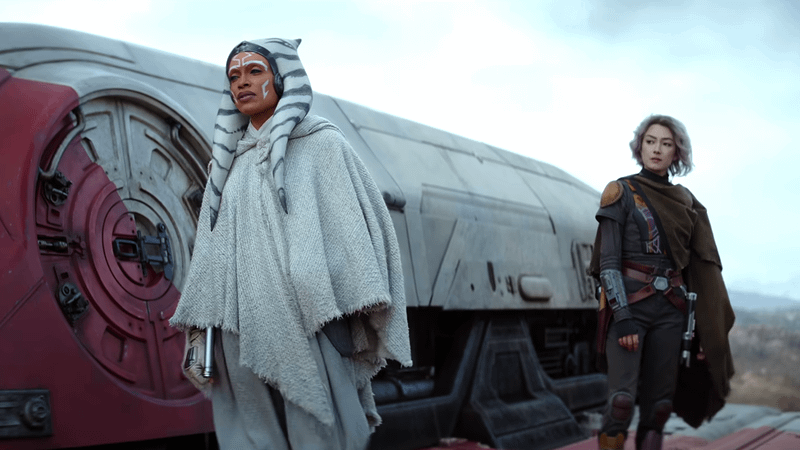

迪士尼在最新一次粉丝见面会上正式宣布，《阿索卡》第二季将于2027年1月20日登陆Disney+。消息一出，星战圈瞬间热闹起来了，毕竟距离第一季完结，粉丝们已经苦等了三年多时间。

看点一：打破核心设定
卢卡斯在1977年开创《星球大战》时，给这个宇宙定下了一个近乎宗教级的核心设定：一切故事都发生在“a galaxy far, far away”（一个遥远、遥远的银河系）。这句开场白不仅是一句台词，更是整个星战宇宙的世界观根基：它意味着这个世界是独立的、封闭的、与我们的现实世界毫无关联。
但据多家媒体报道，《阿索卡》第二季正在打破这条规则。第二季的故事将不再拘泥于传统的星战银河系框架，角色们要面对的，是一个比以往任何时候都更大、更复杂、更陌生的威胁。
看点二：安纳金再度回归，可能深挖师徒宿命羁绊
海登·克里斯滕森（Hayden Christensen）。他确认回归《阿索卡》第二季。结合他在星战宇宙中饰演达斯·维达/阿纳金·天行者的身份，这一回归的意义不言而喻。
安纳金既是阿索卡人生最重要的导师，也是带给她无尽伤痛的人，第二季会继续探讨原力、命运，解开第一季埋下的精神世界伏笔。
看点三：索龙归来，《反叛军》英雄们集体“升级打怪”
根据已经确认的消息：索龙元帅（Grand Admiral Thrawn）即将归来。这位在《星球大战：反叛军》（Star Wars: Rebels）动画中就以天才战略家形象深入人心的反派，终于要在剧中大展拳脚。
戴夫・菲洛尼也透露，第二季承担着串联整个后帝国时代星战宇宙的任务，把《曼达洛人》《波巴费特之书》的故事线索收拢，为了铺垫后续院线大作。
看点四：贝兰・斯科尔换人！权力的游戏 “猎狗” 接棒出演
第一季贝兰演员雷・史蒂文森不幸离世，第二季由《权力的游戏》猎狗扮演者罗伊・麦克凯恩接手这个关键角色。
贝兰身上埋藏巨大谜团，看透绝地与西斯的腐朽，追寻原力本源力量。他究竟是敌是友？他的终极目的，是第二季最大悬念之一。
看点五：莫蒂斯诸神登场！解锁原力最神秘领域
第一季结尾埋下的伏笔终于要揭示了！莫蒂斯诸神，代表原力光明、黑暗、平衡的远古超自然存在，之前只在动画《克隆人战争》短暂出现。
这意味着剧集不再局限于绝地 vs 西斯的老套路，会探索原力更深层的奥秘，但是有观众会担心：过度加入神秘巫术元素，会不会丢掉星战原本的味道？
从2023年到2027年，四年的间隔在流媒体时代堪称漫长。但对于星战这个IP而言，粉丝们等待的不仅是一部剧，而是那个“很久以前，在遥远的银河系”里，关于绝地、原力和希望的下一个篇章。
有意思的是，2027年1月20日，这个日子还卡在一个巧合里：一个月后的2027年2月19日，1977年那部《星球大战》电影的修复版将首次以 IMAX 格式重返大银幕。